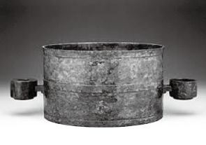
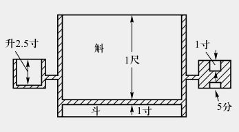

文史花絮 10
与五胡十六国同时代的欧洲，也遭遇了不同种族和文化的巨大冲突。公元350年，匈人（Huns，很可能是从中国北方迁徙出去的匈奴人）突然出现在欧洲的边缘。公元3世纪末，他们消灭了日耳曼东哥特王国。西哥特王国也遭到重创，大批日耳曼人西迁。西哥特人于公元378年在阿德里亚堡打败罗马军队，直接对罗马帝国造成威胁。公元401年夏天，西哥特人从巴尔干半岛侵入意大利，后来在公元410年攻占了罗马城，大肆劫掠三天后离去，给罗马人留下奇耻大辱。公元419年，西哥特人建立了西哥特王国，这是罗马帝国第一个不得不承认的“蛮族”王国。从公元434年到公元452年将近二十年之内，东西罗马帝国都不断遭到匈人的侵犯。公元443年，匈王阿提拉（Attila，公元406—公元453），率军攻到君士坦丁堡城外，东罗马军队全军覆没，不得已签立城下之盟。公元451年，阿提拉攻入西罗马的比利时省，一直打到靠近今天佛罗伦萨不远的波河才接受和平协议条款撤军。公元455年，罗马再次陷落，这一次是落在日耳曼的另一支汪达尔人手里。这一系列事件最终导致西罗马帝国于公元467年灭亡。
文史花絮 11
东汉年间，王莽篡权，改国号为“新”。为了统一全国度量衡，在建国元年（公元9年），命人依照当时大学者刘歆（约公元前50—公元23）的考订，铸造了一个量器，作为全国各地称量五谷等容器的标准。量器以青铜铸造，为的是传之久远，永垂典范，并且定名为“嘉量”（见下图）。

在量器表面有二百一十六个美丽铭文，详细记述了铸器的缘由，以及各部位的容量及尺寸等。全器一共分作五个量体，中央的圆形主体，上部是“斛”，下部较浅的是“斗”，右耳是“升”，左耳上部是“合”，下部是“龠”；2龠等于1合，10合等于1升，10升等于1斗，10斗等于1斛（见下图）。斗与斛及合与龠，在度量时要反转过来才能使用。由此可知，在当时的合、升、斗、斛之间，都是以10进位制来计算的。根据实测，斛之容积为2 018.66 立方厘米。另外，由器表铭文与实物的比对，得知当时一尺的长度等于今日的23.088 7 厘米，其他可依此类推。

